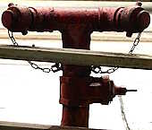
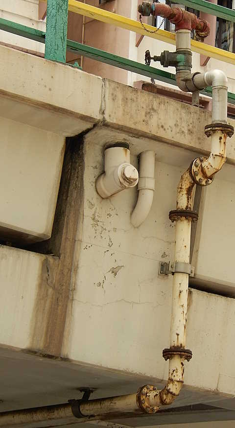

Double Head Swan Neck in Hong Kong
[Sources for this page]Sources for this page
- Freddie, on Y2016-M06-D07 | Mount Davis Hong Kong Waterworks Fire Hydrant | Gwulo website | https://gwulo.com/media/25038
- Google | Google Maps (Street View) | https://www.google.com/maps/
- Lands Department (HKSAR Government) | GeoInfo Map | https://www.map.gov.hk/gm/map/ | I learnt about this source from snowshine12345 https://www.discuss.com.hk/viewthread.php?tid=29167296&page=1#pid520626555
- Waterworks Office (British Hong Kong), Y1967-M03 to Y1970-M08 | HKRS287-1-681 Fire Hydrants - Island - Record of installation, removals, changes of position or type | Public Records Office, Government Records Service (HKSAR Government)
- Waterworks Office (British Hong Kong), Y1970-M07 to Y1972-M04 | HKRS287-1-682 Fire Hydrant - Island - Records of Installation, Removals, Changes of Position or Type | Public Records Office, Government Records Service (HKSAR Government)
- Waterworks Office (British Hong Kong), Y1972-M04 to Y1975-M03 | HKRS287-1-683 Fire Hydrant - Island - Records of Installation, Removals, Changes of Position or Type | Public Records Office, Government Records Service (HKSAR Government)
- Waterworks Office (British Hong Kong), Y1971-M12 to Y1973-M01 | HKRS287-1-686 Fire Hydrant - Mainland - Records of Installation, Removals, Changes of Position or Type | Public Records Office, Government Records Service (HKSAR Government)
Called the Double Head Swan Neck in old hydrant installation documents, they look nothing like a normal Swan Neck. At least sixty three existed, but I believe only seventeen remained. There were three variants: the standard one that looks like a T, the weird one with extended nozzles that looks like a hammerhead shark, and the equally weird one with L-shaped nozzle extensions (I don't think examples of this variant still exist). While most extant examples have Type II caps, at least two have caps usually seen on "viaduct hydrants"
The standard-looking one
A yellow one was photographed by netizen Freddie on Y2016-M02-D21 at an unknown location on Mount Davis, its caps are missing. I am not sure if this hydrant still exists, as I could not find it during my visit to Mount Davis on Y2026-M07-D02. I will return to do a more thorough search at all the Mount Davis Battery sites. But there is an extant one inside the Jockey Club Mount Davis Youth Hostel, which still has its Type II caps. It is possible to photograph that hydrant from outside the Hostel's fence. While it currently looks yellow, you can see hints of red paint, and indeed it used to look red in the past according to Google Maps street view.
Remarkably, one such hydrant lasted for at least fifty two years until at least Y2023-M10. After reading some public records documents and locating it in Google Maps street view, I found that the Double Head Swan Neck previously numbered 1, later renumbered 32250 at some point, had been painted properly unlike the one in the Mount Davis Hostel with fading paint. Unfortunately, it was replaced by a normal Swan Neck which inherited the 32250 number at some point between Y2023-M10 and Y2026-M09
 |
| An unnumbered yellow (?) Double Head Swan Neck |
| Jockey Club Mount Davis Youth Hostel |
| Photo taken in Y2026-M07 |
Extended nozzles
I believe sixteen such hydrants still exist on the Marsh Road Flyover, the mess of flyovers at the Tunnel Approach Rest Garden, Canal Road/Wong Nai Chung Gap Flyover, and the Tsing Fung Street Flyover. Note that many of these are hard to check in person so I had to rely on Google Maps, the most recent street view capture was in 2024 and some of these hydrants might have been removed / replaced by another type between that and when you read this page.
 |
| front view of red Double Head Swan Neck (with extended nozzles) 567; bad lighting |
| Tsing Fung Street Flyover at King's Road |
| Photo taken in Y2026-M07 |
 |
| back view of red Double Head Swan Neck (with extended nozzles) 567 |
| Tsing Fung Street Flyover at King's Road |
| Photo taken in Y2026-M04 |
 |
| red Double Head Swan Neck (with extended nozzles) 1128 |
| Canal Road Flyover near Sharp Street East |
| Photo taken in Y2026-M0 |
Extended nozzles (L-shaped extension)
After reading some public records documents, I managed to find five such hydrants along Cotton Tree Drive in Google Maps street view. I believe they were numbered 228, 258, 259, 260, and 261, all of which were unfortuntately removed at some point between Y2009-M07 and Y2011-M02. The reason I say "I believe" is because the sketched map provided in the public records lacked details (and also because the road layout changed a bit since their installation in the 1970s), so I am not sure if the ones I saw in Google Maps street view are these exact five Double Head Swan Necks. As these hydrants were removed more than fifthteen years ago, I have no photos of them, but an extant Round Head numbered 4ND has the same L-shaped extension on one of its side outlet nozzles, so just imagine putting those on the Double Head Swan Necks. Or be like me and check the 2009 Google Maps street view captures.
 |
| Red Round Head 4ND, one of its side outlet nozzle has the same type of L-shaped extension seen on this variant of Double Head Swan Neck |
| Tsing Long Highway, ~600m north of Tai Lam Tunnel bus interchange |
| Photo taken in Y2026-M07 |